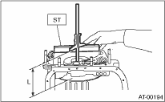
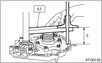
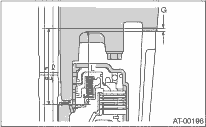

AUTOMATIC TRANSMISSION(4AT) > Oil Pump Housing
1. Measure the distance “L” from the end of ST to the high clutch drum concave section using the ST.
| ST 398643600 | GAUGE |

2. Measure the distance from the oil pump housing mating surface to the end surface of the ST using the ST.
| ST 398643600 | GAUGE |

3. Calculation of total end play
Select the suitable thrust needle bearing from the table below so that clearance C will be within 0.25 to 0.55 mm (0.0098 to 0.0217 in).
C = (L + G) −L
|
C |
Clearance between concave section of high clutch and end of clutch drum support |
|
L |
Distance from the transmission case mating surface to concave portion of high clutch |
|
G |
Gasket thickness [0.28 mm (0.0110 in)] |
|
L |
Height from the oil pump housing mating surface to the upper surface of the cover for the oil pump having the thrust needle bearing. |

|
Thrust needle bearing | |
|
Part number |
Thickness mm (in) |
|
806528050 |
4.1 (0.161) |
|
806528060 |
4.3 (0.169) |
|
806528070 |
4.5 (0.177) |
|
806528080 |
4.7 (0.185) |
|
806528090 |
4.9 (0.193) |
|
806528100 |
5.1 (0.201) |
4. After completing the end play adjustment, insert the bearing race in the high clutch race. Apply vaseline to install the thrust needle bearing to oil pump cover.
5. After correctly installing the new gasket to the case mating surface, carefully install the oil pump housing assembly. Be careful to avoid hitting the drive pinion against the inside of case.
6. Install both parts with dowel pins aligned. Make sure there is no clearance at the mating surface.